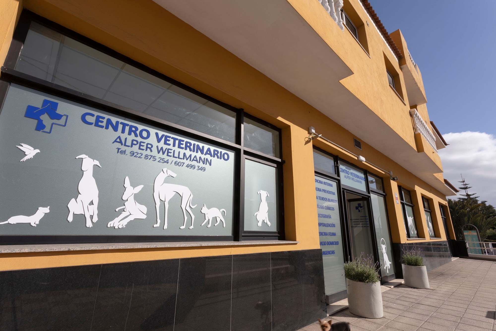
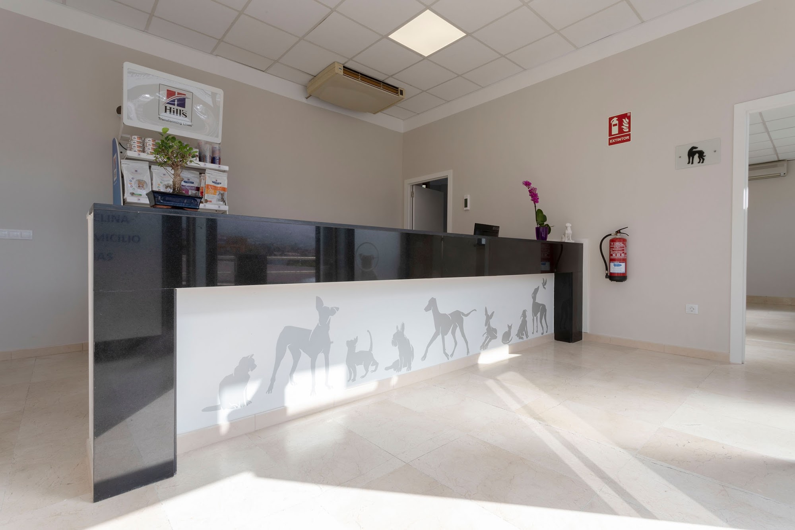
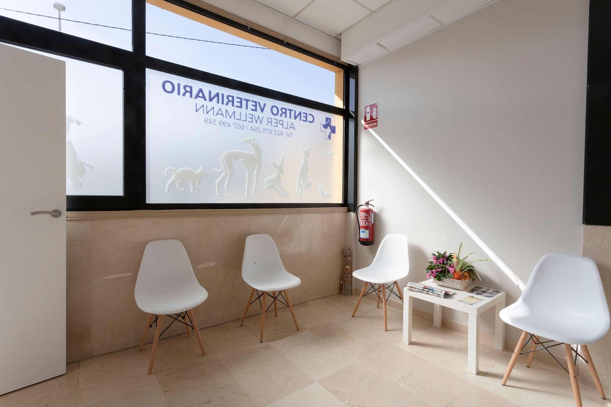
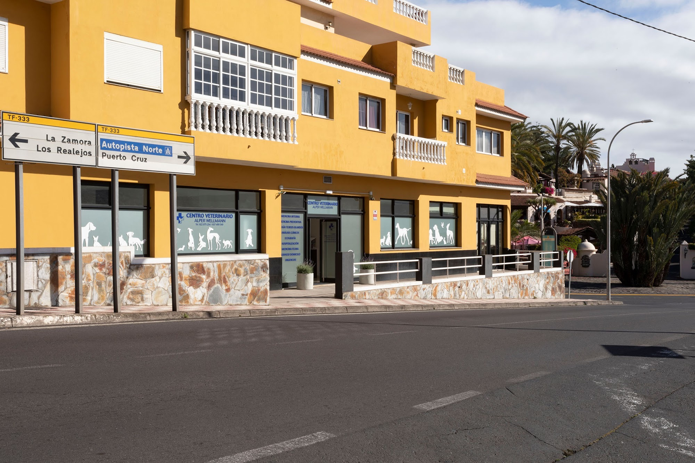

Perros y gatos · La Montañeta, Los Realejos
Sin prisas y sin puertas cerradas.
Te explicamos cada paso, con tiempo, y nos escribes por WhatsApp cuando lo necesites. En español y en inglés.
4,8★★★★★368 reseñas en GoogleLun–vie 9:00–20:00 · Sáb 10:00–14:00
Lo que pone en nuestra cristalera
Servicios
- Medicina interna
- Medicina preventiva
- Cirugía de tejidos blandos
- Análisis clínicos
- Ecografía
- Hospitalización
- Medicina felina
- Servicio a domicilio
Lo que dicen quienes vienen
Sobre el trato, en sus palabras.
4,8★★★★★368 reseñas en Google
El Dr. Alper me explicó con detalle, durante 40 minutos, todo lo que le pregunté. […] ¡Sin puertas cerradas, sin estrés, sin pánico!Milow estaba muy asustado, y ella incluso lo recibió fuera para quitarle los nervios. […] Ya hemos estado allí cuatro o cinco veces, y además el precio es justo.El veterinario fue muy cercano y trató a mi perra con mucho cariño y paciencia. […] Tuve respuesta y cita rapidísimo.El hecho de tener dos salas de espera, una para perros y otra para gatos, me parece todo un detalle. Además, pudimos comunicarnos con mucha facilidad por WhatsApp.En todo momento han mostrado respeto y empatía. Desde el primer día que fuimos, se notaba el cariño.Las chicas de recepción fueron muy serviciales […] podían comunicarse en inglés, y eso hizo todo el proceso mucho más fácil.¡El equipo es maravilloso y muy atento! Querrán a tus animales tanto como tú.Un equipo estupendo y veterinarios competentes, muy amables y sin complicaciones: atendieron a nuestra gata sin cita.¡Excelente médico, excelente asistente médico, a nuestra Fine le encantan!


Por dentro
Una visita tranquila, desde la puerta.
- Dos salas de esperaUna para perros y otra para gatos, para que nadie espere con nervios ajenos.
- Con tiempo para explicarQué le pasa, qué vamos a hacer y por qué. Puedes preguntar todo lo que quieras.
- Español e inglésEn recepción te atienden también en inglés.
- WhatsApp de verdadPara pedir cita y para contarnos cómo sigue en casa.
- Peluquería canina al ladoPor si después de la consulta toca baño o corte.
Alper, Daniel y Lorena: los nombres que más se repiten en las reseñas.
Pedir cita
Escríbenos y te damos hora.
Pulsa el botón: se abre WhatsApp con el mensaje preparado. Solo tienes que rellenar los huecos.
Pedir cita por WhatsApp¿Prefieres hablar? 607 49 93 49 · Fijo 922 87 52 54
Horario
- Lunes a viernes
- 9:00 – 20:00
- Sábados
- 10:00 – 14:00
- Domingos
- Cerrado
Dónde estamos
C. los Afligidos, 132
38419 La Montañeta · Los Realejos
En La Montañeta (Los Realejos), en el norte de Tenerife, cerca de Puerto de la Cruz. Fachada amarilla con el rótulo azul.
Cómo llegar